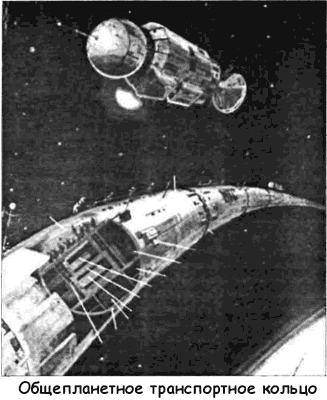

Общепланетное транспортное средство
На примере тросовых связок мы имели возможность лишний раз убедиться, какое количество вариантов технической системы способна предложить конструкторская мысль, когда базовая идея уже сформулирована. При всей фантастичности концепции космического лифта (и космического ожерелья как производной первого порядка от проекта Арцутанова) человеческая фантазия оказалась способна породить еще более невероятную конструкцию.
Речь идет о проекте, получившем название «Общепланетное транспортное средство» (ОТС). Его выдвинул и обосновал инженер Анатолий Юницкий из Гомеля.
В своей статье, опубликованной журналом «Техника молодежи» в 1982 году, Юницкий утверждает, что если когда-нибудь продукт, получаемый за счет космической промышленности, составит хотя бы один процент от общего товаропроизводства Земли, у человечества появится потребность в принципиально новом транспортном средстве, способном обеспечить перевозки на трассе «Земля — космос — Земля» до 10 миллиардов тонн в год. Ни одна из известных транспортных схем не сможет обеспечить столь фантастический объем перевозок. Заглядывая далеко в будущее, Юницкий предлагает свое решение этой глобальной проблемы.
ОТС представляет собой замкнутое колесо поперечным диаметром порядка 10 метров, которое покоится на специальной эстакаде, установленной вдоль экватора. Высота эстакады в зависимости от рельефа колеблется в пределах от нескольких десятков до нескольких сотен метров. На океанских просторах, а они составляют 76 % от длины экваториальной линии, эстакада размещена на плавучих опорах, заякоренных на две.
Процесс старта ОТС выглядит следующим образом. Известно, что после подачи электрической энергии на обмотку линейного электродвигателя возникает бегущее магнитное поле.
В герметичном канале, расположенном по оси корпуса OTС, находится бесконечная лента, имеющая магнитную подвеску и являющаяся своеобразным ротором двигателя. В нее наводится ток, который будет взаимодействовать с породившим его магнитным полем, и лента, не испытывающая никакого сопротивления (она размещена в вакууме), придет в движение.
Точнее, во вращение вокруг Земли. При достижении первой космической скорости лента станет невесомой. При дальнейшем разгоне ее центробежная сила через магнитную подвеску станет оказывать на корпус ОТС всевозрастающую вертикальную подъемную силу, пока не уравновесит каждый его погонный метр (транспортное средство как бы станет невесомым — чем не антигравитационный корабль?).
В удерживаемое на эстакаде транспортное средство с предварительно раскрученной до скорости 16 км/с верхней лентой, имеющей массу 9 тонн на метр, и точно такой же, но лежащей неподвижно нижней лентой размещают груз и пассажиров. Это делается в основном внутри, а частично и снаружи корпуса ОТС, но так, чтобы нагрузка в целом была равномерно распределена по его длине. После освобождения от захватов, удерживающих ОТС на эстакаде, его диаметр под действием подъемной силы начнет медленно расти, а каждый его погонный метр — подниматься над Землей. Поскольку форма окружности отвечает минимуму энергии, то транспортное средство, до этого копировавшее профиль эстакады, примет после подъема форму идеального кольца.
Хотя после подъема с эстакады ОТС будет отдано на волю воздушных потоков, они не окажут на его работу никакого влияния. Расчеты показывают, что ни на что не опирающееся транспортное средство обладает уникальной изгибной жесткостью и устойчивостью, недоступной статическим конструкциям и обусловленной движением бесконечной ленты.
Например, дополнительная нагрузка в 100 тысяч тонн, приложенная к участку ОТС длиной в 1 километр, изогнет его относительно идеальной окружности всего на 20 сантиметров.

Анализ показывает, что поднявшееся транспортное средство будет находиться в равновесии только в том случае, если его общая кинетическая энергия будет равна энергии тела такой же массы, движущегося с первой космической скоростью.
Если общая энергия будет большей, диаметр кольца начнет увеличиваться, меньшей — уменьшаться. Тогда для подъема ОТС необходимо иметь либо первоначальный избыток кинетической энергии (ленту разгоняют на Земле до более высокой скорости), либо в процессе подъема нужно уменьшать массу транспортного средства путем сброса балласта.
Предпочтительнее всего их сочетание. В качестве балласта наиболее целесообразно использовать экологически чистые вещества: воду или предварительно сжиженный воздух.
Общий расход балласта при подъеме на высоту 30 километров — порядка 10-100 килограммов на погонный метр кольца.
Растяжение корпуса ОТС по мере увеличения его диаметра будет сравнительно невелико: длина кольца будет увеличиваться на 1,57 % для каждых 100 километров подъема над Землей. Удлинение корпуса компенсируют путем перемещения друг относительно друга его блоков, концы которых телескопически входят друг в друга и связаны между собой, например, гидроцилиндрами. Бесконечные ленты линейных электродвигателей будут удлиняться за счет их упругого растяжения.
Скорость подъема ОТС на любом из участков пути может быть задана в широких пределах: от скорости пешехода до скорости самолета. Атмосферный участок транспортное средство проходит на минимальных скоростях.
После выхода из плотных слоев атмосферы включают обратимый привод верхней бесконечной ленты на генераторный режим. Лента начнет тормозиться, а двигатель — вырабатывать электрический ток. Эту энергию переключают на двигатель второй ленты, включенный на прямой режим.
Нижняя лента, имеющая ту же массу, что и верхняя, до этого неподвижная относительно корпуса, начинает вращаться в обратную сторону. Так обеспечивается в процессе вывода неизменность кинетической энергии вращающихся вокруг планеты элементов ОТС. В противном случае кольцо может сесть обратно на Землю.
Корпус транспортного средства и все, что к нему прикреплено — груз, линейные электродвигатели и тому подобное, — подчиняясь закону сохранения момента количества движения системы, придет во вращение. Он начнет крутиться в ту же сторону, что и верхняя бесконечная лента, пока не достигнет окружной скорости, равной первой космической. Радиальная скорость упадет до нуля. После этого на высоте 400–600 километров выгружают груз и пассажиров, сразу оказавшихся у места назначения — космического ожерелья Земли, находящегося на этой же высоте.
Посадка ОТС на Землю осуществляется в обратном порядке.
Таким способом ОТС будет выведено в ближний космос за один или два часа, если перегрузки в нем будут приняты на уровне современных аэробусов в момент их взлета (ускорение порядка 1–2 м/с?).
В процессе транспортного цикла не понадобится подвод энергии извне. ОТС обойдется первоначальным запасом кинетической энергии, которая с верхней бесконечной ленты в процессе взлета будет перераспределена на корпус, а при посадке опять отдана ленте. К ней, кстати, присоединится и энергия космического груза, доставляемого на Землю. Например, доставка тонны груза с Луны даст такое же количество энергии, что и тонна нефти (лунный груз по отношению к Земле обладает кинетической и потенциальной энергией, которая утилизируется ОТС и преобразуется в электрическую форму).
По пути в космос и обратно или в промежутках между рейсами ОТС будет получать такое количество дешевой энергии, которое обеспечит как собственные потребности в ней, так и потребности человечества в целом. Кроме описанного источника энергии — энергии космического груза, есть по меньшей мере еще три источника: солнечная энергия, получаемая через солнечные панели, токи ионосферы и энергия вращения Земли вокруг своей оси. Получаемую энергию ОТС будет либо аккумулировать в своих бесконечных лентах, либо передавать ее на Землю.
По оценке Анатолия Юницкого, общая масса ОТС составит 1,6 миллиона тонн (40 тонн на погонный метр), грузоподъемность — 200 миллионов тонн (5 тонн на метр), пассажировместимость — 200 миллионов человек Расчетное число выходов ОТС в космос за пятидесятилетний срок службы — 10 тысяч рейсов.
Изобретатель указывает, что для выполнения транспортной работы ОТС с помощью, например, космических кораблей многократного использования, подобных «Спейс шаттлу», их общий стартовый вес должен быть равен 100 триллионам тонн. При работе этих кораблей в атмосферу должно быть выброшено 60 триллионов тонн продуктов сгорания твердого топлива, содержащих свыше 6 триллионов тонн газообразного хлористого водорода. Очевидно, что даже в тысячи раз меньший выброс был бы гибельным для всего живого на планете. Поэтому ракетная транспортная схема в данном случае неприемлема.
В свою очередь геосинхронный космический лифт Юрия Арцутанова будет иметь пропускную способность на уровне современной железной дороги, то есть порядка 10 тысяч тонн в сутки. Поэтому для обеспечения такой же пропускной способности, как у ОТС, понадобится 2 тысячи лифтов общей длиной 100 миллионов километров и общей массой в триллионы тонн. Лифты должны быть изготовлены из уникальных по своим прочностным характеристикам материалов, которые еще не получены даже в лабораторных условиях.
Следовательно, и эта транспортная схема неконкурентоспособна по сравнению с ОТС.